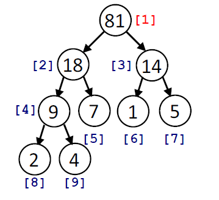
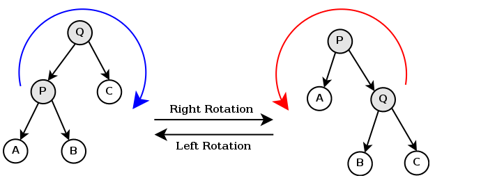

EECS 281 FALL 2012 FINAL EXAM STUDY GUIDE
by Evan Hahn, Jacob Nestor, Summit, Brad Hekman, Scott Godbold, Justine Chen
(Note that this isn’t the 8.5” × 11” crib sheet that you’re allowed to bring in.)
Searches
Linear search
Binary search
Sorts
Bubble sort
Selection sort
Insertion sort
Merge sort
Quicksort
Heapsort
Trees
Terminology (from wikipedia)
Traversals
Rotations
Hash tables
Graphs
Data structures for graph algorithms
Algorithms overview
Dijkstra
Implementation (from Wikipedia)
Prim’s
Kruskal’s
Algorithm families
Brute force
Greedy
Dynamic programming
Bottom-up
Top-down
Binomial Coefficient
Backtracking
Branch and bound
Complexity reference
Time complexity
STL reference
Iterators
Reverse iterators
<algorithm>
sort
lower_bound
upper_bound
set_union
set_intersection
set_difference
set_symmetric_difference
<stack>
<queue>
<vector>
<list>
pair (from <utility>)
Exam review notes
Longest increasing sequence
Graph algorithms
Misc.
License information
Searches
Linear search
Start at one end and look at each element. O(N).
Binary search
Start in the middle, and divide in half until you find it. Only works on sorted lists. O(log N).
Sorts
Bubble sort
- Explanation video
- Swap adjacent values (when appropriate) until you can't swap any more
- worst = average = O(n²)
- best = O(n)
Selection sort
- Explanation video
- Build a new array by picking the smallest (or largest) element in unsorted portion of array and appending it to the end of the sorted array.
- In place
- worst = average = best = O(n²)
Insertion sort
- Explanation video
- Build a new array by plucking, one by one, out of the unsorted portion of the array and inserting it where it belongs in the sorted array
- worst = average = O(n²)
- best = O(n)
- If already sorted, typically fastest of bubble, selection, or insertion.
Merge sort
- Explanation video and explanation GIF
- Break it down and then build it back up - Top Down
- Break into smallest pieces then put together - Bottom Up
- worst = average = best = O(n log n)
- O(1) memory (but can be O(n log n))
- STABLE sort
Quicksort
- Explanation video and gif
- Pick a pivot and recurse, recurse (or iterate, iterate)
- worst = O(n²)
- average = best = O(n log n)
- In-place version is possible: O(1) memory (as seen in review day before midterm). However, recursive calls use O(log(n)) stack allocations so the real memory usage could be considered O(log(n))
- Pick a good pivot!
- UNSTABLE sort
Heapsort
- sort for heaps; we likely don’t need to know it, but just in case...
- O(n log n) for all cases.
- O(1) memory
Heaps
Definition (from lecture slides)
- Data structure that gives easy access to the most extreme element
- Maxheap: max element “on top”
- Minheap: min element “on top”
- Implemented with Complete Binary Trees, arrays, or priority queue
Example
- Given the max-ordered heap tree:

The heap: 81, 18, 14, 9, 7, 1, 5, 2, 4
- “Fix” your heap after you insert an element
- bottom-up heapify
- top-down heapify
Time Complexities
- Insertion: O(log n)
- Removal of largest item: O(log n)
- Heapsort: O(n log n)
Trees
Terminology (from wikipedia)
- A full binary tree (sometimes proper binary tree or 2-tree or strictly binary tree) is a tree in which every node other than the leaves has two children. Or, perhaps more clearly, every node in a binary tree has exactly 0 or 2 children. Sometimes a full tree is ambiguously defined as a perfect tree (see next).
- A perfect binary tree is a full binary tree in which all leaves are at the same depth or same level, and in which every parent has two children. (This is ambiguously also called a complete binary tree (see next).)
- A complete binary tree is a binary tree in which every level, except possibly the last, is completely filled, and all nodes are as far left as possible.
- BST: Binary search tree
- Search, Insert, and Delete:
- Average: O(log n)
- Worst: O(n)
- AVL: A self-balancing binary search tree
- Search , Insert, and Delete:
- Average = Worst = O(log n)
Traversals
Depth-First
Pre-Order
Visit the root
Traverse left subtree
Traverse right subtree
Post-Order
Traverse left subtree
Traverse right subtree
Visit the root
In-Order
Traverse left subtree
Visit the root
Traverse right subtree
- In-order traversal on a BST will visit the elements in sorted order
Breadth-First
Level-Order
Visit every node on a level from left to right then go down a level
Rotations
- recognize imbalance
- balance = height(left child) - height(right child)
- height(leaf) = 0
- height(node) = max( height(left_child) , height(right_child) ) + 1
- if abs(balance) > 1, node is out of balance
- characterize the imbalance
- fix the imbalance in AVS tree if height is greater than or equal to 2
- You pick the highest-up imbalance to fix first
- if balance = N, left is taller by N. if N is negative, right is taller by -N
- imbalance can only have four shapes: \, /, >, and <
- \ - RL(top)
- / - RR(top)
- > - RR(middle), RL(top)
- < - RL(middle), RR(top)
- 1 rotation for the "straight line", 2 rotations for the "angle bracket". The first rotation in the "angle brackets" turn them into the straight line
- know how to do insertions and deletions
- 
Right Rotation of node Q:
Let P be Q's left child.
Set P to be the new root.
Set Q's left child to be P's right child.
Set P's right child to be Q.
Left Rotation of node P:
Let Q be P's right child.
Set Q to be the new root.
Set P's right child to be Q's left child.
Set Q's left child to be P.
Hash tables
- separate chaining: each table address has a linked list
- Can support densities > 1 without rehashing, it’s just slower
- linear probing: put it in the next available bucket
- Maximum density of 1, then need to rehash
- Can be faster than separate chaining due to cache reuse
- quadratic probing: try bucket + 1, then bucket + 4, then bucket + 9, then bucket + 16, etc
- double hashing: if you hit a problem, rehash it with a new function
- hash tables are a Dictionary ADT. Dictionary ADT - abstract data structure of items with keys that supports two basic operations: insert a new item, and return an item with a given key
- Hash Functions - transforms the search key into a table address
- Good hash functions:
- Spreads data evenly throughout buckets
- Minimizes collisions
- Use prime # of buckets – don’t want the # of buckets to be a factor of the data
- Easy to compute, computable for all inputs
- Collision Resolution - Dealing with search keys that hash to the same address
- MAD - multiply and divide method of creating the size of an array
- |a * intmap + b| mod M where M is prime and a and b are positive integer
- Division - method of dividing the size of an array which is your hash table
- | intmap | mod M where M is prime
Graphs
- directed: there are arrows (A points to B, but not vice-versa)
- undirected: there are no arrows (there is a connection between A and B)
- simple graph: no multiple edges, no loops
- multigraph: multiple edges, no loops
- lower bound: used in Branch and Bound in the TSP problem. If your lower bound + current path is longer than current best path then break
- upper bound: used in TSP problem to get a fast, relatively close starting best length to compare against for bounding
- Hamiltonian path & cycle: a path that visits each vertex only once, is a cycle if the path begins and ends at the same node
- From homework 4:
- A SIMPLE graph is a graph that has no loops or more than one edge between any pair of two different vertices.
- A graph is CONNECTED if there is a path between each pair of vertices
- An adjacency matrix of an empty graph is an EMPTY matrix
- A connected graph T without any cycle is called a TREE
- In a graph, if there exists an edge e = [u, v], then u and v are ADJACENT
- A QUEUE data structure is used for BFS, whereas a STACK data structure is used for DFS
- A COMPLETE graph of n vertices has n(n-1)/2 edges
- The number of edges in a DENSE graph is close to the maximal possible number of edges
- A SPANNING TREE of a connected graph is a tree that contains all vertices and some edges of any weight of G
- A MINIMUM SPANNING TREE (MST) of a connected, undirected graph is a tree with all vertices connected via the cheapest possible set of n-1 edges
- Prim's, Kruskal's, and Dijkstra's are considered GREEDY algorithms because they solve the problems by progressively making locally optimal choice at each state of iteration.
Data structures for graph algorithms
- adjacency list (good for sparse graphs)
- adjacency matrix (good for dense graphs)
- “visited” boolean, one per vertex
- can be represented in a bit vector
- “parent” -- where did I come from?
- container representing next steps for an algorithm (stack, queue, priority queue, etc)
Algorithms overview
- breadth-first search (think queue in P1). Always finds the shortest path
- depth-first search (think stack in P1). Not guaranteed to find the shortest path
- Dijkstra
- single-source shortest paths
Dijkstra
- O(V2) (adjacency matrix, linear searching) or O(Elog(V)) (adjacency list, binary heap)
- Basically the same as Prim’s
- no heaps
- just fixed-length arrays with invalidation
- O(V2) time
Implementation (from Wikipedia)
Let the node at which we are starting be called the source node. Let the distance of node Y be the distance from the source node to Y. Dijkstra's algorithm will assign some initial distance values and will try to improve them step by step.
- Assign to every node a tentative distance value: set it to zero for our source node and to infinity for all other nodes.
- Mark all nodes unvisited. Set the source node as current. Create a set of the unvisited nodes called the unvisited set consisting of all the nodes except the source node.
- For the current node, consider all of its unvisited neighbors and calculate their tentative distances. For example, if the current node A is marked with a tentative distance of 6, and the edge connecting it with a neighbor B has length 2, then the distance to B (through A) will be 6+2=8. If this distance is less than the previously recorded tentative distance of B, then overwrite that distance. Even though a neighbor has been examined, it is not marked as "visited" at this time, and it remains in the unvisited set.
- When we are done considering all of the neighbors of the current node, mark the current node as visited and remove it from the unvisited set. A visited node will never be checked again; its distance recorded now is final and minimal.
- If the destination node has been marked visited (when planning a route between two specific nodes) or if the smallest tentative distance among the nodes in the unvisited set is infinity (when planning a complete traversal), then stop. The algorithm has finished.
- Set the unvisited node marked with the smallest tentative distance as the next "current node" and go back to step 3.
Prim’s
- Builds an MST
- Maintain two sets of edges. One of edges in the MST (innies) and one of edges out of the MST (outies). Repeatedly find the smallest edge in outies that connects to a vertex in the MST. Add the edge to innies.
- graph must not be disjoint
- better for dense graphs
- V2 or E log(V)
Kruskal’s
- Builds an MST
- Maintain two sets of edges as with Prim’s. Repeatedly add the smallest edge in outies that does not create a cycle with the edges in innies.
- works for disjoint graphs
- better for sparse graphs
- E log(V)
Algorithm families
Brute force
Go hard in the paint and try everything. Generate/enumerate everything possible and try them all. Has worst complexity, but is the only possible algorithm for some problems (TSP, other NP problems)
Greedy
Selects the best possible choice at each iteration and hope that locally optimal decision lead to a globally optimal one. They don’t always, though.
Dynamic programming
Bottom-up
int fib_bottom(int n) {
if (n == 0)
return 0;
int A[n];
A[0] = 1;
A[1] = 1;
for (int i = 2; i < n; i ++) {
A[i] = A[i - 1] + A[i - 2];
}
return A[n - 1];
}
Top-down
This is written as a function passing an array. Can also be written as functor.
int fib_top_help(int n, int A[]) {
if (A[n] != -1) return A[n];
int fib = fib_top_help(n-1, A) + fib_top_help(n-2, A);
A[n] = fib;
return fib;
}
int fib_top_down(int n) {
int *A = new int[n+1];
A[0] = 0; A[1] = 1;
for (int i = 2; i <= n; i++) {
A[i] = -1;
}
return fib_top_help(n, A);
}
Binomial Coefficient
int binom_bottom(int n, int k)
{
int C[n+1][k+1];
for(int i=0; i<=n; i++)
{
for(int j=0; j<=min(i,k); j++)
{
if(j == 0 || j == i)
C[i][j] = 1;
else
C[i][j] = C[i-1][j-1] + C[i-1][j];
}
}
return C[n][k];
}
Backtracking
- Finds any one solution that fits the constraints. Don’t care if it’s the optimal solution.
- Typically traverses using DFS method
- Uses a feasibility function to determine whether to backtrack or not (called “promising()” in lecture)
- branch on every possibility
- maintain one or more “partial solutions”. If a partial solution violates the constraint, drop it and backtrack
- better than enumeration because you can eliminate entire branches early
Branch and bound
- Extension of backtracking
- uses “bounding” & “pruning” to stop partial solutions that can’t grow into an optimal solution.
- doesn’t stop when a single solution is found, keeps checking and uses solution as bound
- Traverses the entire decision tree using DFS
- Involves a bounding function based on previous suboptimal solutions (bounds)
- Finds the optimal solution.
Complexity reference
Time complexity
algorithm | worst case | best case | average case |
linear search | O(N) | O(1) | O(N) |
binary search | O(logN) | O(1) | O(logN) |
bubble sort | O(N2) | O(N) | O(N2) |
selection sort | O(N2) | O(N2) | O(N2) |
insertion sort | O(N2) | O(N) | O(N2) |
merge sort | O(N logN) | O(N logN) | O(N logN) |
quick sort | O(N2) | O(N logN) | O(N logN) |
heap sort | O(N logN) | O(N logN) | O(N logN) |
algorithm | complexity |
Prim’s | O(V2) or O(E log(V))* |
Kruskal’s | O(E log(V)) |
Dijkstra’s | O(V2) or O(E log(V))* |
depth-first search | O(V+E) or O(E)** |
breadth-first search | O(V+E) or O(E)** |
*adjacency matrix | O(V2) |
binary heap and adjacency list | O(E log(V)) |
Fibonacci heap and adjacency list
** O(E) for connected graph ONLY | O(E + V log(V)) |
Iterators
vector<int>::iterator it;
for (it = myvector.begin(); it != myvector.end(); it ++) {
cout << *it << endl;
}
Reverse iterators
vector<int>::reverse_iterator rit;
for (rit = myvector.rbegin(); rit != myvector.rend(); ++rit)
cout << *rit << endli;
}
// rbegin() points to the last element
// rend() points to right before the first element
// you can get the forward facing iterator by calling rit.base()
// many STL functions that take iterators will not take reverse
// iterators.
// note that rit.base() will point to the elt immediately after rit
// i.e. myvector.rend().base() == myvector.begin()
<algorithm>
sorts in O(N log(N)) - not always stable
sort(myvector.begin(), myvector.end());
sort(myvector.begin(), myvector.end(), mylessthanfunction);
// instead of a comparator function, you may use a comparator class
// that has operator()(Type a, Type b) overloaded
// this is typically faster due to compiler inlining
returns iterator pointing to the first value that is greater than or equal to the searched for value in a sorted array.
lower_bound(myvector.begin(), myvector.end(), 12);
returns iterator pointing to the first value that is strictly greater than the searched for value in a sorted array.
upper_bound(myvector.begin(), myvector.end(), 25);
the reason upper and lower bound work this way is so that if you print
[ lower_bound(v.begin(),v.end(), min), upper_bound(v.begin(), v.end(), max) )
you will get every element that is [min, max)
returns an iterator pointing to the end of a sorted array that is the union of two separate sorted arrays.
returns an iterator pointing to the end of a sorted array that is the intersection (contains all values that are present in both arrays) of two sorted arrays
returns an iterator pointing to the end of a constructed range that contains all elements present in the first sorted array but not in the second sorted array. This is a direction operation
does the same thing as set_difference() but is not directional. Basically, imagine set_difference(A, B) combined with set_difference(B, A).
First in, last out. Imagine a stack of pancakes.
- empty() - returns a boolean; is this empty?
- size() - how big is this? Returns unsigned int
- push() - stack this (put on the top)
- pop() - remove the top element
- top() - what is the top element?
Notes:
- All O(1) amortized
First in, first out. Imagine people queued up for a movie.
- empty() - returns a boolean; is this empty?
- size() - how big is this? Returns unsigned int
- front()
- back()
- push()
- pop() // from front, correct?
Notes:
- All O(1) amortized
- empty() Returns bool (true/false). True if empty.
- size() Number of elements of vector.
- resize(n, t=T()) - Adjust by adding or deleting elements of vector so that its size is "n".
- capacity() - Max number of elements of vector before reallocation.
- reserve(size_t n) - Max number of elements of vector set to "n" before reallocation.
- max_size() - Max number of elements of vector possible.
- erase(), clear() - Erase all elements of vector.
- erase(iterator) - Erase element of vector. Returns iterator to next element.
- erase(begin_iterator, end_iterator) - Erase element range of vector. Returns iterator to next element.
- iterator erase(iterator pos)
- iterator erase(iterator first, iterator last)
- v[index] - Element of vector.
- front() - First element of vector. (Left and Right value assignment.)
- back() - Last element of vector. (Left and Right value assignment.)
- begin() - Returns an iterator pointing to the first element in the vector.
- end() - Returns an iterator referring to the past-the-end element in the vector container.
- push_back(const T& value) Add element to end of vector.
- pop_back() Remove element from end of vector.
- (C++11) emplace (const_iterator position, Args&&... args) - Construct and insert element - The container is extended by inserting a new element at position. This new element is constructed in place using args as the arguments for its constructor.
- (C++11) emplace_back (Args&&... args) - Construct and insert element at the end - Inserts a new element at the end of the vector, right after its current last element. This new element is constructed in place using args as the arguments for its constructor.
- assign(size_type n,const T& t) - Assign first n elements a value "t".
- assign(begin_iterator,end_iterator) - Replace data in range defined by iterators.
- insert(iterator, const T& t) - Insert at element "iterator", element of value "t".
- insert(iterator pos, size_type n, const T& x) - Starting before element "pos", insert first n elements of value "x".
- insert(iterator pos, begin_iterator,end_iterator) - Starting before element "pos", insert range begin_iterator to end_iterator.
- swap(vector& v2) - Swap contents of two vectors.
- (C++11) shrink_to_fit() - Requests the container to reduce its capacity to fit its size.
TODO (Lol, slow)
Don’t think we’ll need to know this, haven’t used it all semester.
^ FACT
pair (from <utility>)
pair<int, int> p;
p = make_pair(10, 20);
p.first; // 10
p.second; // 20
Exam review notes
Longest increasing sequence
- given an array of integers, what’s the longest increasing subsequence? Doesn’t have to be continuous
- enumerate through every subset
- complexity is O(2N) generally, sometimes N!
- find the longest subsequence from the first one, then the 2nd, then the 3rd
- it doesn’t actually get the optimal solution
Graph algorithms
- depth-first search doesn’t, in general, find shortest paths (but it can). BFS does.
Misc.
- example problem: develop a BFS or DFS for a graph that is disconnected. Make sure that it runs in O(V + E) time
- 4pt MC (x10)
- 20pt Long Answer (pick 5 out of 6)
- Locations (by last name)
- 1670 BBB: A-G
- STAMPS: H-Z
- 1690 BBB: Accommodations Room
License information
This study guide is licensed under a Creative Commons Attribution 3.0 Unported license. Its accuracy is not guaranteed. Enjoy!
“Software and cathedrals are much the same – first we build them, then we pray.”
– Sam Redwine
Markov says we got this...
Chesney wants to tell you a story...
A story about project 2!!
There once was a project 2,
That everyone failed, oh poo.
Some people dropped out
And you all were in doubt
More suffering was sure to ensue
Then came project 3,
Where you set up a key
And after the hash
You were done in a flash
281 can be fun, see?
`And finally project 4,
Kirby and cakes galore!
Did you min span around?
Did you branch and bound?
Make it fast or you are done for.
Now for your last exam,
I see you all trying to cram.
But this guide is dope,
So I have some hope,
Are you excited? I am.
*Disclaimer: Chesney did not say this.
{kind=link}
{kind=link}